# Recreate all objects used by the network examples in this chapter.
library(DOSE)
library(org.Hs.eg.db)
data(geneList, package = "DOSE")
de <- names(geneList)[abs(geneList) > 2]
edo <- enrichDO(de)
edo2 <- gseDO(geneList)28 Gene–term and term–term networks
| Aspect | Network views |
|---|---|
| Question | Which genes, terms, and functional modules are connected, shared, or redundant? |
| Input | A checked enrichment result, gene–term membership, and optionally a term-similarity matrix or PPI evidence layer. |
| Functions | cnetplot(), heatplot(), treeplot(), emapplot(), upsetplot(), and related network helpers. |
| Output | Gene–term, term–term, hierarchy, overlap, or evidence-network figures. |
| Limitations | Dense graphs are difficult to audit; edge definitions differ between semantic similarity, shared genes, and PPI. Keep the object, filtering rule, and evidence source with the figure. |
Use network views after result filtering and term organization; compare them with the simpler summary plots before making a biological claim.
28.1 Gene-Concept Network
Both the barplot() and dotplot() only displayed most significant or selected enriched terms, while users may want to know which genes are involved in these significant terms. To consider the potential biological complexities in which a gene may belong to multiple annotation categories and provide information about numeric changes when available, we developed the cnetplot() function to extract the complex associations. The cnetplot() depicts the linkages of genes and biological concepts (e.g. GO terms or KEGG pathways) as a network. GSEA result is also supported with only core enriched genes displayed. For GSEA results, cnetplot specifically visualizes the core enriched genes identified through leading edge analysis, which represent the subset of genes most responsible for driving the enrichment signal.
Users can use the fc_threshold parameter in the cnetplot function to filter genes to only include those with |foldChange| > fc_threshold. This allows users to plot only high fold-change genes (e.g., fc_threshold = 1). In addition, users can use the node_label parameter to label genes that are shared between groups of terms (i.e. node_label = "share").
Too many labels overlapping? cnetplot() draws gene and category labels with ggrepel, which hides labels that would collide. If you want every label shown, raise the limit — options(ggrepel.max.overlaps = Inf). If the network is simply too dense, it is usually better to reduce what gets drawn rather than to force all labels out: label only the categories with node_label = "category", or keep only the genes you care about with fc_threshold (e.g. fc_threshold = 1 keeps |foldChange| > 1) or by passing a foldChange vector that contains just those genes.
## convert gene ID to Symbol
edox <- setReadable(edo, 'org.Hs.eg.db', 'ENTREZID')
p1 <- cnetplot(edox, foldChange=geneList)
p2 <- cnetplot(edox, categorySizeBy=~ -log10(pvalue), foldChange=geneList)
## only plot high fold-change genes
p3 <- cnetplot(edox, foldChange=geneList, fc_threshold = 2)
p4 <- cnetplot(edox, foldChange=geneList, node_label = "share")
plot_list(p1, p2, p3, p4, ncol=2, tag_levels = 'A')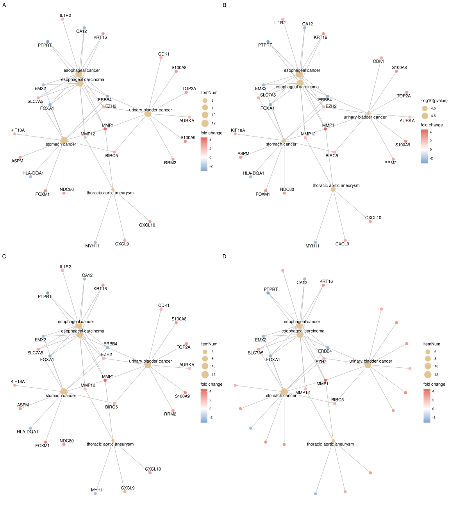
If you would like label subset of the nodes, you can use the node_label parameter, which supports 4 possible selections (i.e. “category”, “gene”, “all” and “none”), as demonstrated in Figure 28.2.
The node_label parameter also supports enhanced functionality:
- Vector selection: Specify specific genes to label using a character vector, e.g.,
node_label = c("gene1", "gene2") - ‘exclusive’ labeling: Label only genes that belong exclusively to one category using
node_label = "exclusive" - ‘share’ labeling: Label genes that are shared between multiple categories using
node_label = "share"(as shown in the example above) - Conditional filtering: Use comparison operators to filter genes based on fold change, e.g.,
node_label = "> 1"ornode_label = "< -1"to label genes with absolute fold change greater than 1
p1 <- cnetplot(edox, node_label="category")
p2 <- cnetplot(edox, node_label="gene")
p3 <- cnetplot(edox, node_label="all")
p4 <- cnetplot(edox, node_label="none",
color_category='firebrick',
color_item='steelblue')
plot_list(p1, p2, p3, p4, ncol=2, tag_levels = 'A')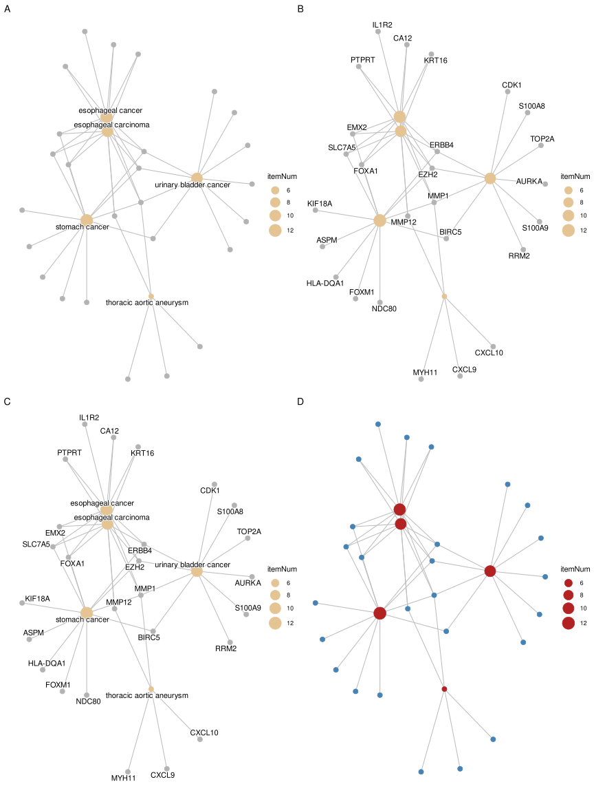
The cnetplot function can be used as a general method to visualize data relationships in a network diagram. Please refer to the vignette of ggtangle.
28.1.1 Customizing gene colors in cnetplot
Users can color specific genes by providing a named vector of fold changes containing only those genes.
foldChange <- c(rep(1, 6), rep(-1, 4))
names(foldChange) <- c("MARCO", "GZMB", "CXCL11", "CXCL10",
"LAG3", "CCL8", "PDK1", "GABRP", "MELK", "CENPE")
p <- cnetplot(edox, foldChange=foldChange)
p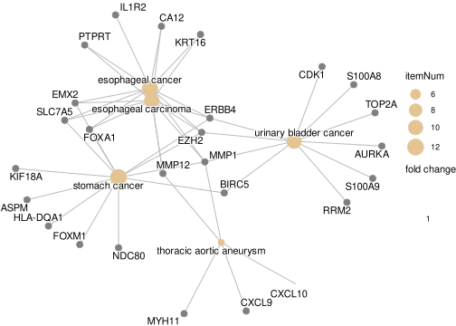
If you want to remove the color legend:
p <- p + guides(color='none')
p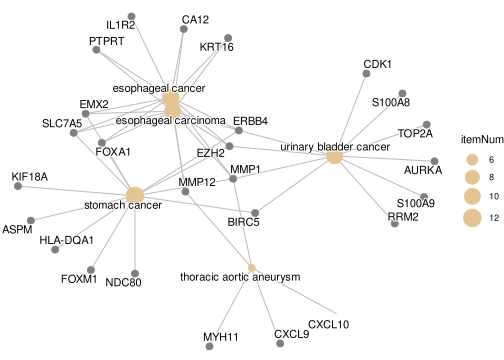
To create a custom legend, you can use a dummy data frame and geom_point:
d <- data.frame(type=c('upregulated', 'downregulated'), x=0, y=0)
g <- p + geom_point(aes(alpha=type, x=x, y=y), data=d, shape=16, size=0)
g + guides(alpha=guide_legend(
override.aes=list(color=c("blue", "red"),
alpha=1,
size=3),
title = "VIP genes",
reverse = TRUE
))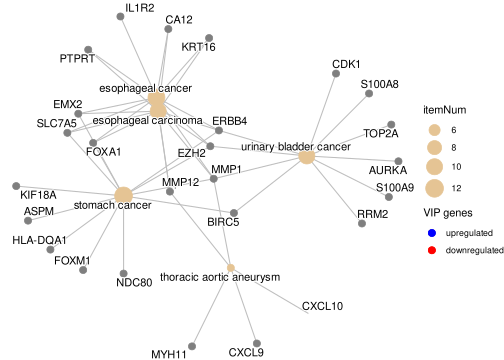
28.1.2 Tuning cnetplot labels and edge colors
Besides the size of the category / item nodes (size_category / size_item) and the fold-change coloring above, two dedicated knobs are commonly needed:
color_edge = "category"colors each edge by the category (term) it belongs to, instead of mapping every edge to a single color.color_edgealso accepts a single color, e.g.color_edge = "grey".geom_cnet_label()is the label layer behindcnetplot()(fromggtangle). Becausecnetplot()returns aggplotobject, you can add anothergeom_cnet_label()layer on top withsize,colorandfontfaceto fine-tune the label text of a specific node type (e.g. only the category labels), which is useful when the last few labels are clipped or you want a distinct label style.
p1 <- cnetplot(edox, node_label = "none", showCategory = 4)
p2 <- cnetplot(edox, node_label = "none", showCategory = 4, color_edge = "category") +
geom_cnet_label(node_label = "category", size = 5, color = "firebrick", fontface = "bold")
plot_list(p1, p2, ncol = 2, tag_levels = "A")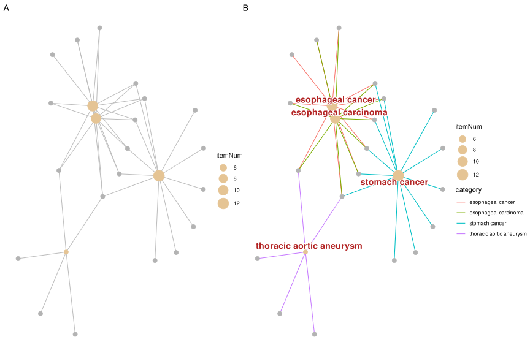
geom_cnet_label() (B).
28.1.2.1 Node and edge colors
The default edge color (a red/green pair on gene-ID plots in some releases) can be replaced either with a single color (color_edge = "grey55") or, when you want the edges colored separately for each term and shown in the legend, with color_edge = "category". Category node colors are set with color_category, and — unlike some older versions — setting foldChange for the gene nodes no longer overrides color_category: the term nodes keep their color_category fill while the gene nodes get the fold-change palette.
p1 <- cnetplot(edox, node_label = "none", color_edge = "grey55",
color_category = "steelblue")
p2 <- cnetplot(edox, node_label = "none", color_edge = "category")
p3 <- cnetplot(edox, node_label = "category", foldChange = geneList) +
scale_color_gradient(low = "blue", high = "red")
plot_list(p1, p2, p3, ncol = 3, tag_levels = "A")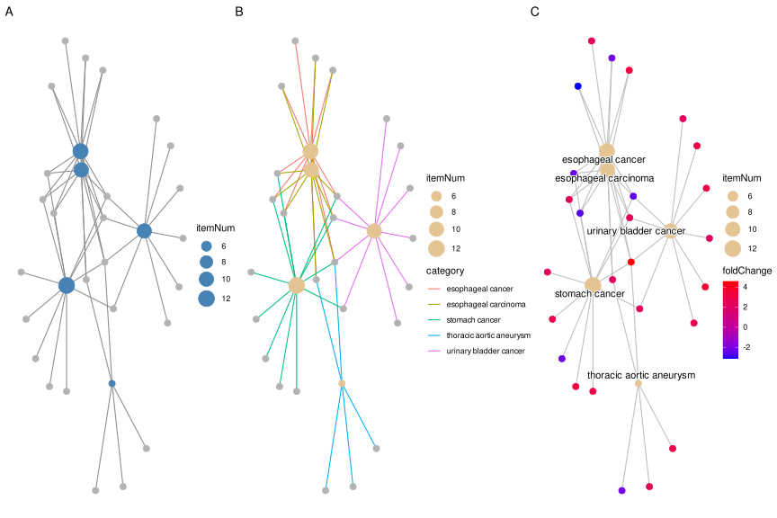
scale_color_gradient() (C).
Because these plots are ordinary ggplot objects, any ggplot2 scale can be plugged on top to re-map the aesthetics — scale_color_*() for gene / label colors and scale_fill_*() for node fills. Match the scale to the aesthetic: foldChange puts a continuous value (the fold change) on the colour aesthetic, so re-colour it with a continuous scale such as scale_color_gradient() / scale_color_gradient2(); a discrete scale_color_manual() would fail with “Continuous value supplied to a discrete scale”. For emapplot(), node colors are mapped to the fill aesthetic, so use scale_fill_manual(values = ...) (or scale_fill_gradient*()) there to customize the node colors.
Note: The cnetplot() function also works with compareCluster() output.
28.2 Heatmap-like functional classification
The heatplot is similar to cnetplot, but displays the relationships as a heatmap. The gene-concept network may become too complicated if users want to show a large number of significant terms. The heatplot can simplify the result and make it easier to identify expression patterns.
p1 <- heatplot(edox, showCategory=5)
p2 <- heatplot(edox, foldChange=geneList, showCategory=5)
plot_list(p1, p2, ncol=1, tag_levels = 'A')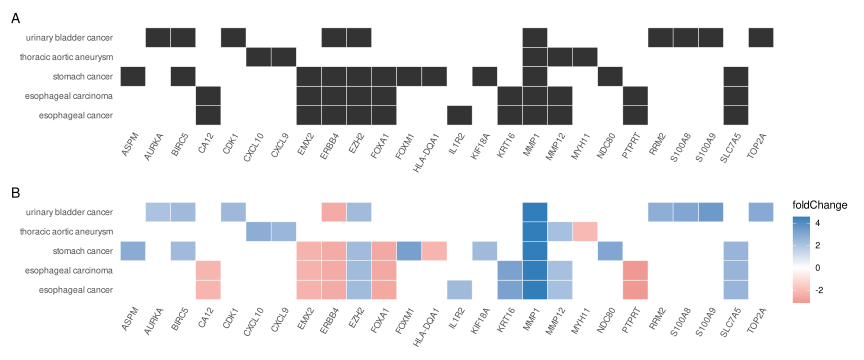
foldChange=geneList (B)
The showTop parameter can be used to limit the number of genes displayed in the heatmap. This is particularly useful when dealing with large gene sets where only the top genes based on fold change or significance need to be visualized. For example, showTop = 20 will display only the top 20 genes in the heatmap.
28.3 Tree plot
The treeplot() function performs hierarchical clustering of enriched terms. It relies on the pairwise similarities of the enriched terms calculated by the pairwise_termsim() function, which by default uses Jaccard’s similarity index (JC). Users can also use semantic similarity values when supported (e.g., GO, DO, and MeSH).
The default agglomeration method in treeplot() is ward.D, and users can specify other methods via the cluster_method parameter (e.g., ‘average’, ‘complete’, ‘median’, ‘centroid’, etc.; see also the documentation of the hclust() function). The treeplot() function will cut the tree into several subtrees (specified by the nCluster parameter, default is 5) and label subtrees using high-frequency words. This reduces the complexity of the enriched result and improves user interpretation ability.
For fine-grained control over text appearance, the fontsize_tiplab and fontsize_cladelab parameters allow users to adjust the font size of tip (leaf) labels and clade labels respectively. For example, fontsize_tiplab = 8, fontsize_cladelab = 10 will set tip labels to 8pt and clade labels to 10pt.
28.3.1 Colouring the clades and wrapping labels
Two things that are easy to get wrong here:
Colouring the clades. Pass group_color a vector of colours, and it is used for both the clade labels and the highlight bars, so the two stay in sync:
treeplot(edox2, showCategory = 20,
group_color = c("#999999", "#E69F00", "#56B4E9", "#009E73", "#F0E442"))Wrapping the tip labels. label_format controls the wrap length of the clade labels (the word-cloud summaries of each cluster), not the tip labels — passing it a number or a function will not change the terms along the tips:
## wraps the clade labels only
treeplot(edox2, label_format = 15)The tip labels are taken straight from the Description of the enrichment result, so to wrap them you have to shorten the descriptions before building the tree. pairwise_termsim() names the similarity matrix from Description, and treeplot() labels the tips from that matrix, so wrapping at this stage propagates all the way through:
edox_wrapped <- edox
edox_wrapped@result$Description <- stringr::str_wrap(edox_wrapped@result$Description, width = 30)
treeplot(pairwise_termsim(edox_wrapped), showCategory = 20)str_wrap() inserts newlines at word boundaries, which the labels render as line breaks. Note that this rewrites the term descriptions of the object, so do it on a copy if you still need the original wording elsewhere.
library(ggtree)
edox2 <- pairwise_termsim(edox)
p1 <- treeplot(edox2, cladelab_offset=8, tiplab_offset=.3, fontsize_cladelab =5) +
hexpand(.2)
p2 <- treeplot(edox2, cluster_method = "average",
cladelab_offset=14, tiplab_offset=.3, fontsize_cladelab =5) +
hexpand(.3)
aplot::plot_list(p1, p2, tag_levels='A', ncol=2)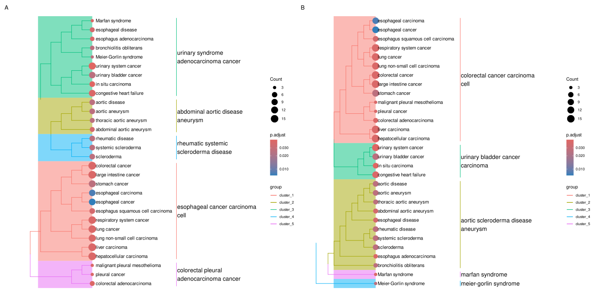
hclust_method = "average" (B)
28.4 Semantic Space Plot
While treeplot() visualizes semantic similarity using a hierarchical structure, the ssplot() (Semantic Space Plot) projects enriched terms into a low-dimensional space (e.g., using Multidimensional Scaling, MDS). This provides a complementary spatial view where terms with high semantic similarity are clustered together.
Like treeplot(), ssplot() requires pairwise_termsim() to be run first. It automatically groups terms into clusters (default nCluster is determined automatically) and labels them with representative words.
ssplot(edox2, nCluster=5) + ggtitle("ssplot (nCluster=5)")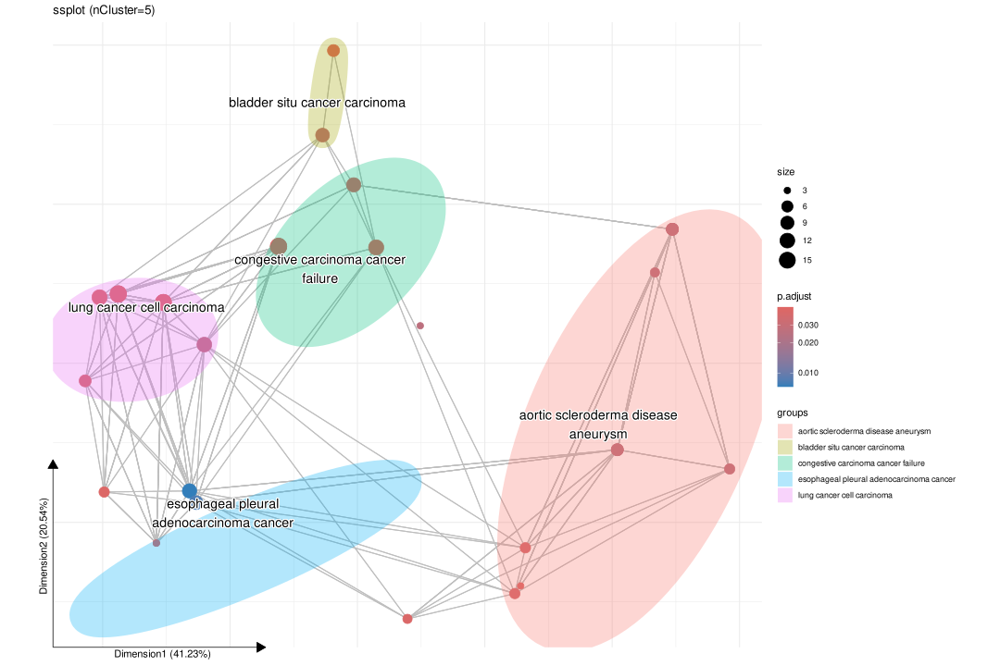
ssplot() is particularly useful for visualizing the overall semantic landscape of enrichment results and identifying distinct functional modules in a continuous space.
28.5 Enrichment Map
Enrichment map organizes enriched terms into a network with edges connecting overlapping gene sets. In this way, mutually overlapping gene sets are tend to cluster together, making it easy to identify functional module.
28.5.1 Handling GO term redundancy
GO annotations often contain redundant terms that can dominate enrichment results, potentially obscuring other biological stories. The simplify() function from the clusterProfiler package uses semantic similarity (via the GOSemSim package) to remove redundant GO terms, providing a clearer view of distinct functional modules.
# Load required packages
library(clusterProfiler)
library(enrichplot)
library(DOSE)
# Prepare example data
data(geneList, package="DOSE")
de <- names(geneList)[abs(geneList) > 2]
# Perform GO enrichment analysis
ego <- enrichGO(de, OrgDb = "org.Hs.eg.db", ont="BP", readable=TRUE)
# Remove redundant GO terms using simplify()
ego_simplified <- simplify(ego, cutoff=0.7, by="p.adjust", select_fun=min)
# Visualize both original and simplified results
ego <- pairwise_termsim(ego)
ego_simplified <- pairwise_termsim(ego_simplified)
p1 <- emapplot(ego, node_label_size=.8, size_edge=.5) +
scale_fill_continuous(low = "#e06663", high = "#327eba", name = "p.adjust",
guide = guide_colorbar(reverse = TRUE, order=1), trans='log10') +
ggtitle("Original GO terms")
p2 <- emapplot(ego_simplified, node_label_size=.8, size_edge=.5) +
scale_fill_continuous(low = "#e06663", high = "#327eba", name = "p.adjust",
guide = guide_colorbar(reverse = TRUE, order=1), trans='log10') +
ggtitle("After removing redundant terms")
# Combine plots
library(patchwork)
p1 + p2 + plot_layout(ncol = 2)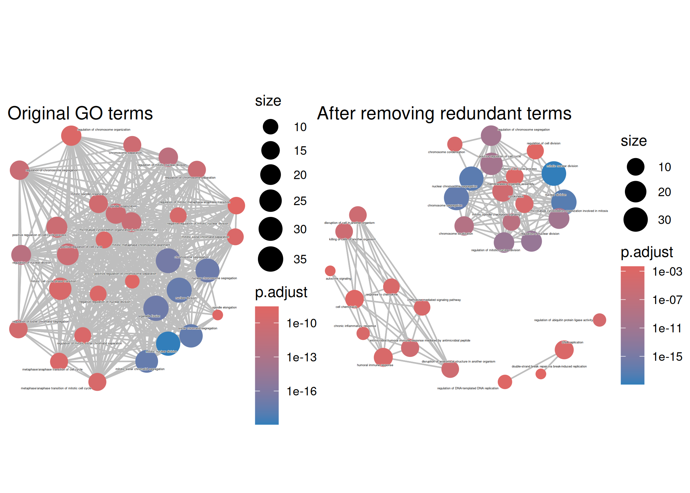
The simplify() function removes redundant GO terms based on semantic similarity (default cutoff = 0.7). This reveals distinct functional modules that might be obscured by redundant terms in the original enrichment results. The pairwise_termsim() function calculates pairwise similarities between terms, which is required for emapplot() visualization.
The emapplot function supports results obtained from hypergeometric test and gene set enrichment analysis. The size_category parameter can be used to resize nodes and the layout parameter can adjust the layout, as demonstrated in Figure 28.12.
edo <- pairwise_termsim(edo)
p1 <- emapplot(edo) # node_label = "category" (default)
p2 <- emapplot(edo, node_label = "none")
p3 <- emapplot(edo, node_label = "none", size_category=1.5)
p4 <- emapplot(edo, node_label = "none", layout="with_fr")
plot_list(p1, p2, p3, p4,
ncol=2, tag_levels = 'A',
design="AAAAAA\nBBCCDD",
heights = c(1, .3))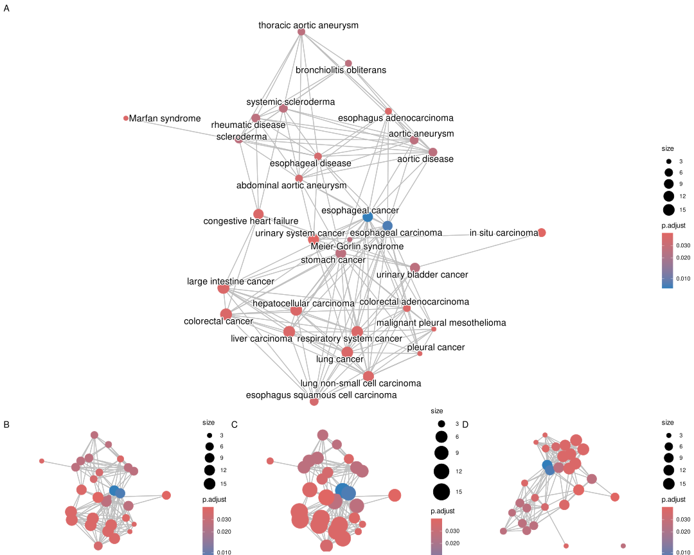
emapplot. default (A), node_label="none" (B), size_category=1.5 (C), and layout="with_fr" (D)
The node_label parameter controls how the labels were displayed. The enriched terms will be displayed by default with node_label="category" and it can be disabled by setting node_label="none".
The node_label_size parameter allows users to adjust the font size of node labels in the enrichment map. This is particularly useful when dealing with many overlapping terms or when labels need to be more readable. For example, node_label_size = 3 will increase the label size compared to the default.
If node_label="group", the emapplot function will cluster the enriched terms into different groups and only group names (determined by wordcloud) will be displayed. If node_label="all", then the enriched terms and group names will be displayed simultaneously.
p5 <- emapplot(edo, node_label = "group")
p6 <- emapplot(edo, node_label = "all")
plot_list(p5, p6,
ncol=1, tag_levels = 'A')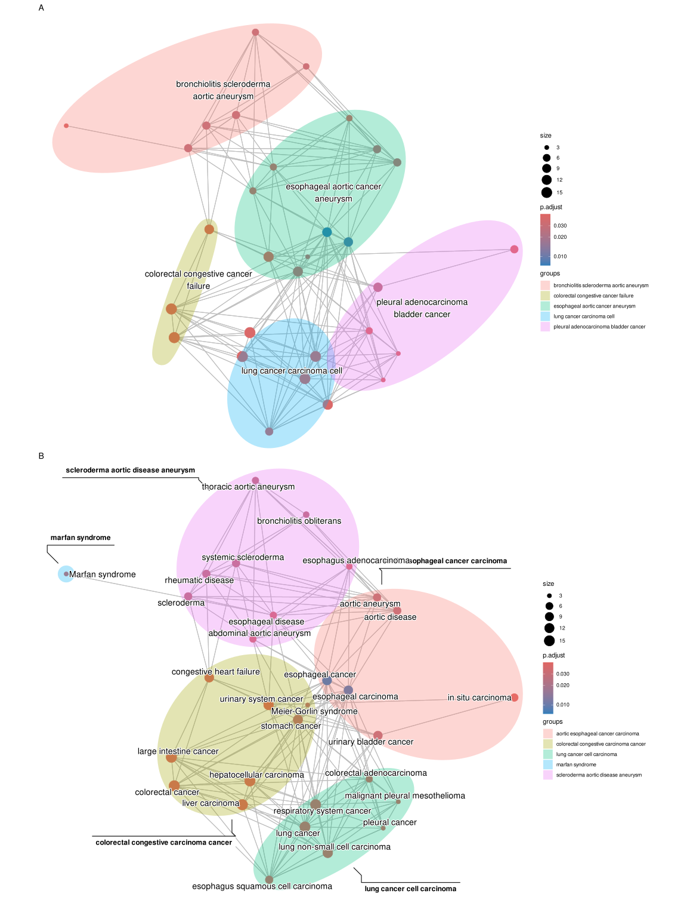
emapplot with enriched terms clustering. node_label="group" (A) and node_label="all" (B).
28.6 UpSet Plot
The upsetplot is an alternative to cnetplot for visualizing the complex association between genes and gene sets. It emphasizes the gene overlapping among different gene sets.
upsetplot(edo)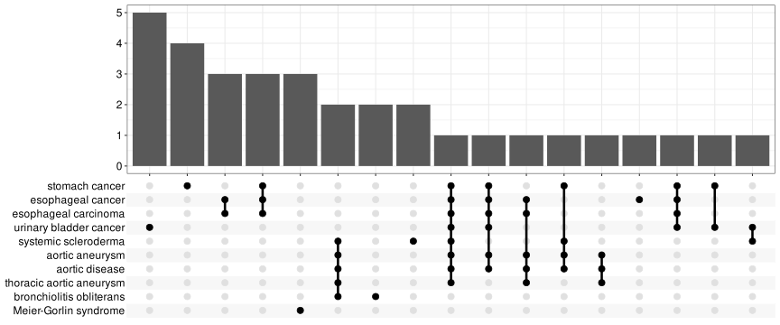
For over-representation analysis, upsetplot will calculate the overlaps among different gene sets as demonstrated in Figure 28.14. For GSEA result, it will plot the fold change distributions of different categories (e.g. unique to pathway, overlaps among different pathways).
# Reuse the local DOSE GSEA result so this visualization does not require
# the KEGG REST API during the book build.
kk2 <- edo2
upsetplot(kk2) 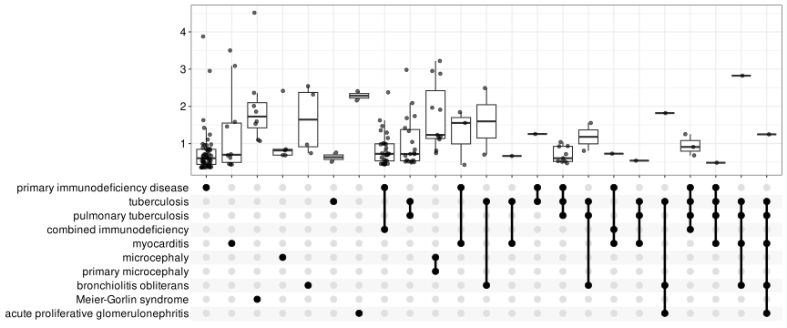
28.7 Next steps
- For GSEA-specific distributions, see GSEA views.
- For biological reporting, continue to evidence-guided interpretation.